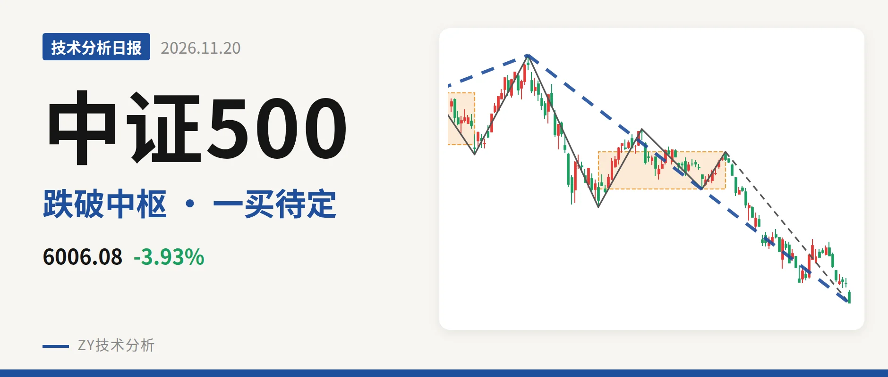
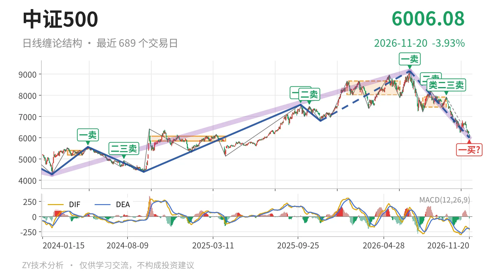
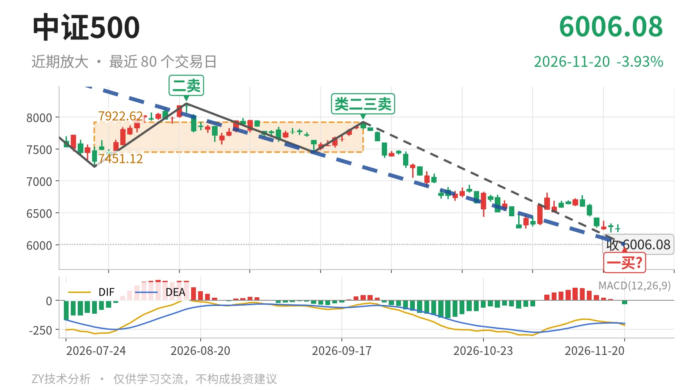

中证500｜中枢失守，6006一买待定

最近日线中枢 7451.12—7922.62点，收盘位于中枢之下
一句话：下跌段未见底背驰，6006一买暂定，反抽看7451点
🧭 走势结构：上涨段见顶，下跌段未终结
当前中证500处在7月1日9147.56点以来的下跌段里，日线下跌线段还在延续。更大级别上，2024年2月5日至2026年7月1日的上涨走势涨113.7%，把4281.24点抬到9147.56点；7月1日之后转为下跌，至11月20日收6006.08点，跌34.3%。这两段都未结束。日线线段7月1日至11月20日已经包含5笔，最新一笔9月22日以来的下跌笔没有结束，因此当前不是中枢震荡，而是向下线段推进。

📉 中枢与位置：跌破7451点，中枢下移
最新收盘6006.08点在最近日线笔中枢7451.12—7922.62点下方，低于下沿约19.4%。该中枢由7月30日至9月22日的三笔重叠构成，上沿7922.62点、下沿7451.12点。对比1月26日至6月8日的日线笔中枢8014.66—8671.35点，中枢明显下移。价格已回到2024年10月8日至2025年4月9日的中枢5843.46—6079.02点内部，但离6079点上沿还有空间。
🔴 买卖点：卖点逐级走低，6006为暂定一买
日线笔级别上，7月1日一卖9147.56点、8月18日二卖8211.31点、9月22日类二三卖7922.62点一个比一个低，反弹高点持续压低。11月20日 6006.08点 出现日线笔级别一买，但所在9月22日至11月20日下跌笔还在延续，因此这个一买只能按 暂定 处理，会随这一笔延续而变化。其后低点不断刷新，前面几个卖点更多对应小级别反弹结束，而不是大级别转折已经成立。

⚖️ 背驰：面积收缩但DIF新低，底背驰未形成
最需要看的是7月1日至7月30日下跌笔与9月22日以来下跌笔的对比。前者绿柱面积2687，DIF低点-285.2；后者到11月20日绿柱面积1867，DIF低点-298.6。价格低点从7221.95点下移到6006.08点，DIF同步新低，绿柱面积却没有放大。这不是“新低不新弱”，而是DIF继续走弱的面积收缩，日线底背驰未形成。最新DIF -213.8仍低于零轴，MACD柱-32.4也仍在零轴下方，说明下行没有完全衰减。由于9月22日以来的下跌笔还在延续，这一比较仍需跟随。
🔭 关键位置观察：反抽不过7451点则构成三卖
结构上，反抽若回不到 7451点 上方，日线笔级别将构成三卖；重新站上 7923点，下跌更可能转为中枢扩展。下方参考 5843点附近，即2024年10月8日至2025年4月9日中枢下沿；再下则看5594.30—6263.16点的线段中枢区间。当前弱在中枢被有效跌破、DIF创新低、暂定一买未获底背驰支持。三者叠加，当前没有强结构信号，仍以弱势结构看待。
⚠️ 本文为基于公开行情数据的缠论技术结构记录，由程序自动计算并生成，仅供学习交流，不构成任何投资建议。市场有风险，投资需谨慎。